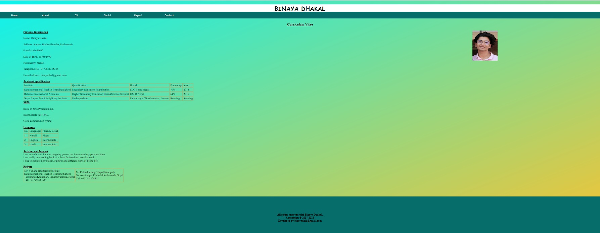

Table of contents:
1.Introduction
2.Experience
3.UI design
4. Designs
5.Evidence of valid codes
6.Progressive report
7.Conclusion
8. References
Introduction
This project of web development was given to students to use what they learned in lectures of first term. We were supposed to develop our personal CV website from scratch. I created this website using the knowledge I had from my lecture class and lot more of research to add specifications in the system. We were meant to create Homepage, about, CV, Social, Contact and Report. Home page is landing page of my website. About page includes a little about me, CV; which includes my Curriculum Vitae, Social; which includes all the social sites where people can reach me, Contact; where my location is embedded through Google map and a contact form, and finally report section. By use of this website people can contact me with my information, see my CV and know a bit more about me.
Experience
This project of web development was given us to use what we learned in Web development in first term. We were supposed to do this assignment individually. While doing this assignment I learned more about HTML and CSS from what I had learned in class. While starting this assignment I was worried about how I was going to complete it but as time passed by, from the researches and suggestions from tutor helped me a lot to work in this project. I revised all the teaching materials from lectures so that I can grasp ideas from them. I also did researches on the design and specification of CV websites. But, the coding is done solely by me. This project gave me more ideas about making responsive websites, designs, color schemes, animations and lot more. For small about of time doing this project I was skeptical about what I was doing and how I was doing it. I didn’t feel like my project was good enough as others but I did what I thought was going to be best for me slowly everything came along. Overall, my experience from this project was good than I expected. I am happy with the resources I got to broaden my knowledge about HTML and CSS. I went into this project with basic level knowledge and came out becoming confident with lot more knowledge and enough to carry more projects like this in future; in academic or in real field.
UI design
UI design also known as user interface design is design by help of which systems on different media platform can have maximum usability when users use it. While creating a website a developer should always keep account of their users and on what devices they will use it and how they can make maximum usability of system. For making my website I also kept on mind about the UI designs to use in my website. This system is responsive which mean it is usable in all media screen without making website complex to use. It also has same color combinations making it eye friendly for the users. Navigation bar is on header part of website which is not complex for user to use. There is also not much use of random design which make website look unattractive and full of chaos. It has simple colors with just needed design without overpowering the whole purpose of website. It has simple colors but not contrasting which makes every attributes bland in the system. The pages have consistence layout throughout all page unlike pages with position of navigation and content changing in every other pages. I got these ideas about UI design from the lecture classes and some by extra research. I tried my best to give the best I could in amount of time I had.
Design:
Design is really important part in any developement project. For this project as well the planning of design was done firstly before coding. The wireframes of web design before developing are shown below:
Wireframe of landing page:

This is the wireframe of about page:

This is the wireframe of CV page:

This is the wireframe of Social page:
This is the wireframe of Contact page:
The website is made for good experience of users and high usability of the system. The system is responsive and include UI designs. The mockup of website are below which was developed after wireframes.
This is screen design of homepage:
This is screen design of about page:

This is screen design of CV page:

This is screen design of Social page:
This is screen design of Contact page:
Evidence of Valid codes:
Validator is used to check the erros in HTML codes. A project should always be free of erros in code. For the validation of my codes below are the proofs.
Progressive report:
This assignment of web was done to use we learned in amount of time of first term. It was really fun assignment. For the first week of assignment I did research about the specifications of website, what are things to keep in mind while creating it and what mistakes not to make. Firstly, I made the logo text of my webiste which is my name. After that navigation was made along with the background. Footer was created after that. After completion of layout of website I added the body part of website like images, fonts style and blocks. Lastly i made the website responsive. It was one of the hardest and most time consuming aspect in this project. Overally, this project was done with great care and research with what will work best.
Conclusion: This assignment was provided with motive of increasing our knowledge about HTML and CSS and that is what exactly it did. It gave students more and deeper understanding about HTML and CSS. Though, there were some problems with making website responsive,padding and other displaying aspects of website, students overcame those by research and discussion with tutor. If more time was provided then we would have added more aminations and features to make website more attractive. Overall, this assignment prepared students for the real world web designing and made them more skill about we designing.
References:
1.Shukwani, D[2013], https://codepen.io/DeepS/posts/published/, [Accessed Date: 10th April 2018]
2.W3School, [2018], https://www.w3schools.com/default.asp, [Accessed Date: 29th March 2018]
3.Pinterest, [2018], https://www.pinterest.com/pin/117093659036340054/, [Accessed Date: 12th April 2018]
4.Pinterest, [2018], https://www.pinterest.com/pin/434949276494646322/, [Acceseed Date: 12th April 2018]
5.Pinterest, [2018], https://www.pinterest.com/pin/459437599464024522/, [Accessed Date: 12th April 2018]
6.Pinterest, [2018], https://www.pinterest.com/pin/113786328071355177/, [Accessed Date: 12th April 2018]
7.Pinterest, [2018], https://www.pinterest.com/pin/498421883744631906/, [Accessed Date: 12th April 2018]
8. Pinterest, [2018], https://www.pinterest.com/pin/543950461213161098/, [Accessed Dat: 12th April 2018]
9. Pinterest, [2018], https://www.pinterest.com/, [Accessed Date: 12th April 2018]